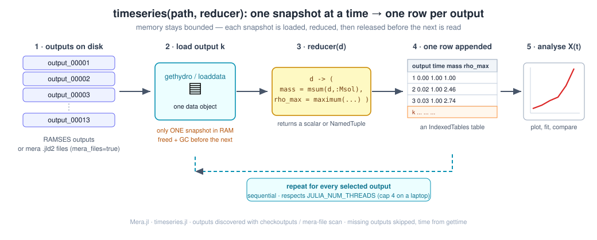
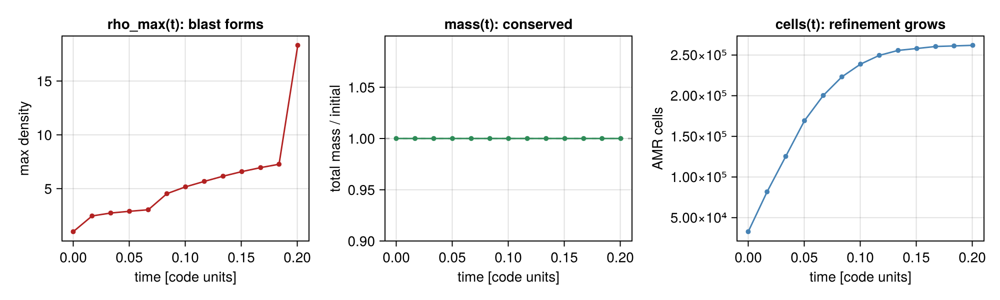
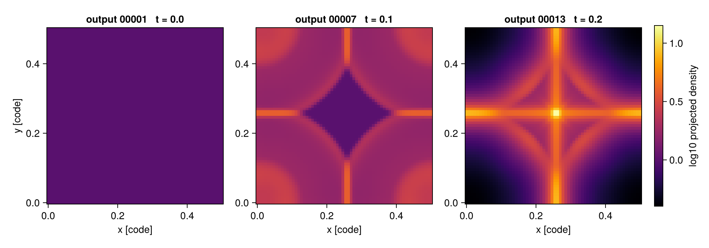
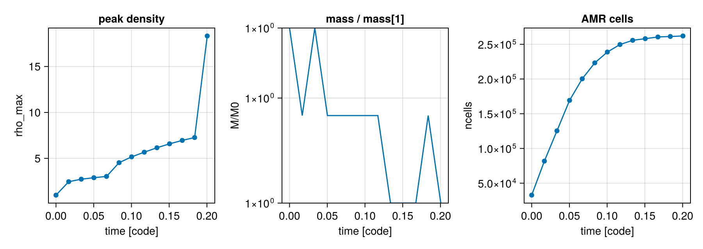

Time Series (multi-snapshot analysis)
This page is also an executable Jupyter notebook — open / download timeseries.ipynb. The notebooks run end-to-end and double as part of Mera's test suite.
Most post-processing is not about one snapshot — it is about evolution: how a mass, a peak density, a star-formation rate, or a profile changes across the outputs of a run. Writing that loop by hand (find the outputs, load each one, handle a missing snapshot, collect the numbers, keep memory under control) is boilerplate everyone re-implements.
timeseries turns it into a single call: you give it a reducer — a function that maps one loaded snapshot to a scalar or a NamedTuple — and it returns one tidy table with a row per output.

It works identically on raw RAMSES outputs and on mera (.jld2) files, and it loads one snapshot at a time — each is reduced and released before the next is read — so peak memory stays bounded on a laptop.
The idea, step by step
- Discover the outputs in
path(viacheckoutputsfor RAMSES, or a scan ofoutput_*.jld2for mera files). Select all of them, a range, or an explicit list. - Load output k —
gethydrofor RAMSES,loaddatafor mera files. Only this one snapshot is in memory. - Reduce it: your
reducer(d)returns the quantities you care about. - Append a row
(output, time, …your fields…)to the result table; free the snapshot. - Analyse the resulting table — plot, fit, compare.
# Example-data root. Point this at your own simulation folder, or set the
# MERA_EXAMPLES environment variable; every path below is built from it.
MERA_EXAMPLES = get(ENV, "MERA_EXAMPLES", "/Volumes/FASTStorage/Simulations/Mera-Tests");
using Mera
run = joinpath(MERA_EXAMPLES, "RAMSES/timeseries_sedov3d")
# discover the outputs available in the run
co = checkoutputs(run)
println("outputs found : ", co.outputs)*__ __ _______ ______ _______
| |_| | | _ | | _ |
| | ___| | || | |_| |
| | |___| |_||_| |
| | ___| __ | |
| ||_|| | |___| | | | _ |
|_| |_|_______|___| |_|__| |__|
Mera v1.8.0
Outputs - existing: 13 betw. 1:13 - missing: 0
outputs found : [1, 2, 3, 4, 5, 6, 7, 8, 9, 10, 11, 12, 13]A real example: a 3-D Sedov blast
The fixture is a small Sedov point explosion (levelmin=5, levelmax=6, 13 outputs). One call gives the total mass, the peak density, and the AMR cell count at every output:
ts = timeseries(run, d -> (
mass = msum(d, :Msol),
rho_max = maximum(getvar(d, :rho)),
ncells = length(d.data),
); time_unit = :standard)
println(ts)timeseries: 13 snapshot(s) from "/Volumes/FASTStorage/Simulations/Mera-Tests/RAMSES/timeseries_sedov3d" (ramses outputs, :hydro)
[1/13] output 00001 t=0.0
[2/13] output 00002 t=0.0168274109063273
[3/13] output 00003 t=0.0334922695630072
[4/13] output 00004 t=0.0502054026812579
[5/13] output 00005 t=0.067001415409705
[6/13] output 00006 t=0.0835998926373125
[7/13] output 00007 t=0.100237444220885
[8/13] output 00008 t=0.117016237218468
[9/13] output 00009 t=0.133806270459172
[10/13] output 00010 t=0.150500035380911
[11/13] output 00011 t=0.167316266875268
[12/13] output 00012 t=0.183733818129636
[13/13] output 00013 t=0.20044896107714
Table with 13 rows, 5 columns:
output time mass rho_max ncells
───────────────────────────────────────────────
1 0.0 6.28425e-35 1.0 32768
2 0.0168274 6.28425e-35 2.46208 81789
3 0.0334923 6.28425e-35 2.73502 125371
4 0.0502054 6.28425e-35 2.89539 169254
5 0.0670014 6.28425e-35 3.03729 200306
6 0.0835999 6.28425e-35 4.53239 223203
7 0.100237 6.28425e-35 5.16768 238827
8 0.117016 6.28425e-35 5.67461 249635
9 0.133806 6.28425e-35 6.15751 255718
10 0.1505 6.28425e-35 6.58408 258070
11 0.167316 6.28425e-35 6.95533 260520
12 0.183734 6.28425e-35 7.26834 261234
13 0.200449 6.28425e-35 18.3208 261969The result is an IndexedTables table — one row per output, with output and time columns added automatically (see Physical time — the default time is in Myr; the dimensionless Sedov sim is shown here in code units).
Plotting those columns against time tells the whole story of the run at a glance:

rho_max(t)climbs as the shock steepens — the blast forms.mass(t)is flat: mass is conserved to round-off (the panel shows mass relative to its initial value, pinned at 1.0).ncells(t)grows from 32 768 to ~262 000 as the AMR mesh refines onto the expanding shock — a free diagnostic of how the grid is working.
Each column is a plain vector you can pull out with IndexedTables.columns:
using Mera.IndexedTables: columns
t = columns(ts).time
rho = columns(ts).rho_max
m = columns(ts).mass
nc = columns(ts).ncells
@show t
@show rho
@show extrema(m) # mass is conserved → flat
@show nc[1], nc[end] # AMR cell count grows as the shock refinest = [0.0, 0.0168274109063273, 0.0334922695630072, 0.0502054026812579, 0.067001415409705, 0.0835998926373125, 0.100237444220885, 0.117016237218468, 0.133806270459172, 0.150500035380911, 0.167316266875268, 0.183733818129636, 0.20044896107714]
rho = [1.0, 2.4620841187532374, 2.7350213089012847, 2.8953918239760763, 3.037285921194034, 4.532394520680104, 5.1676847422567995, 5.674611306033254, 6.15750882977664, 6.584083574556392, 6.955331402702706, 7.268339045626411, 18.320822161297333]
extrema(m) = (6.284249157910609e-35, 6.284249157910612e-35)
(nc[1], nc[end]) = (32768, 261969)
(32768, 261969)Masking and other Mera functions
The reducer receives the full data object for the snapshot, so anything that operates on a Mera data object composes inside it — there is nothing extra to wire up. That includes getvar, reductions like msum / center_of_mass / bulk_velocity, spatial selections like subregion / shellregion, projection (see below), and masking via the mask= keyword that most reductions accept.
For example, the mass of the dense gas (and its fraction) at every output — a boolean mask built from the snapshot and fed straight to msum:
tsm = timeseries(run, d -> begin
mask = getvar(d, :rho) .> 3.0
(m_total = msum(d, :Msol),
m_dense = msum(d, :Msol, mask = mask),
f_dense = msum(d, :Msol, mask = mask) / msum(d, :Msol))
end; time_unit = :standard)
@show columns(tsm).f_dense # climbs as the shock sweeps up gastimeseries: 13 snapshot(s) from "/Volumes/FASTStorage/Simulations/Mera-Tests/RAMSES/timeseries_sedov3d" (ramses outputs, :hydro)
[1/13] output 00001 t=0.0
[2/13] output 00002 t=0.0168274109063273
[3/13] output 00003 t=0.0334922695630072
[4/13] output 00004 t=0.0502054026812579
[5/13] output 00005 t=0.067001415409705
[6/13] output 00006 t=0.0835998926373125
[7/13] output 00007 t=0.100237444220885
[8/13] output 00008 t=0.117016237218468
[9/13] output 00009 t=0.133806270459172
[10/13] output 00010 t=0.150500035380911
[11/13] output 00011 t=0.167316266875268
[12/13] output 00012 t=0.183733818129636
[13/13] output 00013 t=0.20044896107714
(columns(tsm)).f_dense = [0.0, 0.0, 0.0, 0.0, 0.0024885796552046873, 0.04568311531952604, 0.140885107600832, 0.27492312592427803, 0.32419613075023884, 0.33554232939318124, 0.34071834186383704, 0.3411209721585522, 0.36393986186171234]
13-element Vector{Float64}:
0.0
0.0
0.0
0.0
0.0024885796552046873
0.04568311531952604
0.140885107600832
0.27492312592427803
0.32419613075023884
0.33554232939318124
0.34071834186383704
0.3411209721585522
0.36393986186171234The same pattern covers "mass inside a sphere over time" (subregion(d, :sphere, …) then msum), "centre-of-mass drift" (center_of_mass), kinematics (bulk_velocity), and so on — each is just a one-line reducer.
Watching the blast evolve: projections over time
The reducer can return anything, so it can return a projection. This makes a projection a natural per-snapshot reduction: the small 2-D map is kept while the heavy AMR data of that snapshot is freed before the next is read. Reducing each output to its column-density map gives a time-series of maps — the frames of a movie:
movie = timeseries(run,
d -> projection(d, :sd, verbose=false).maps[:sd];
outputs = [1, 7, 13], time_unit = :standard)
frames = columns(movie).value # a vector of 2-D maps, one per output
println("number of frames : ", length(frames))
println("frame size : ", size(frames[1]))
println("peak Sigma/frame : ", round.(maximum.(frames), sigdigits=4))timeseries: 3 snapshot(s) from "/Volumes/FASTStorage/Simulations/Mera-Tests/RAMSES/timeseries_sedov3d" (ramses outputs, :hydro)
[1/3] output 00001 t=0.0
[2/3] output 00007 t=0.100237444220885
[3/3] output 00013 t=0.20044896107714
number of frames : 3
frame size : (64, 64)
peak Sigma/frame : [0.5, 1.413, 3.343]Laid side by side, the maps show the shell sweeping outward through the box:

Return a scalar instead when you only need a number per snapshot — for example the peak column density over time, d -> maximum(projection(d, :sd, verbose=false).maps[:sd]).
Physical time and cosmological runs
The time column is physical by default — Myr (from gettime), not code units — so a time-series plots against a meaningful axis straight away. Choose another unit with time_unit (:Gyr, :yr, …), or time_unit = :standard for code units (as the dimensionless Sedov fixture above).
A cosmological run is detected automatically (iscosmological) and gets two extra columns — redshift (z = 1/aexp − 1) and aexp — so you can plot any quantity against redshift directly. The time column then holds the age of the universe in Myr.
Selecting which outputs
outputs takes :all (the default), a range (1:5), or an explicit list ([1, 7, 13]). Numbers that are not present on disk are silently skipped, so a half-finished run or a gap in the output sequence is handled without special-casing.
Keeping memory bounded
timeseries already loads one snapshot at a time and frees it before the next. Two more levers cut the memory of each load — the main thing to reach for on a RAM-limited machine or with large outputs:
tssel = timeseries(run, d -> length(d.data);
outputs = 1:5,
lmax = 5,
xrange = [0.4, 0.6], yrange = [0.4, 0.6], zrange = [0.4, 0.6],
time_unit = :standard, verbose = false)
println(tssel)Table with 5 rows, 3 columns:
output time value
────────────────────────
1 0.0 512
2 0.0168274 512
3 0.0334923 512
4 0.0502054 512
5 0.0670014 512Snapshots are processed sequentially, so the loop never multiplies memory across outputs; the loaders themselves respect JULIA_NUM_THREADS (cap it at 4 on a laptop).
Visualise the evolution
Peak density rises as the blast forms; total mass is conserved (shown relative to its initial value); the AMR cell count grows as refinement tracks the shock.
using CairoMakie
fig = Figure(size = (900, 320))
ax1 = Axis(fig[1,1]; title = "peak density", xlabel = "time [code]", ylabel = "rho_max")
ax2 = Axis(fig[1,2]; title = "mass / mass[1]", xlabel = "time [code]", ylabel = "M/M0")
ax3 = Axis(fig[1,3]; title = "AMR cells", xlabel = "time [code]", ylabel = "ncells")
lines!(ax1, t, rho); scatter!(ax1, t, rho)
lines!(ax2, t, m ./ m[1])
lines!(ax3, t, Float64.(nc)); scatter!(ax3, t, Float64.(nc))
fig
From mera files
If you have converted a run to mera files with savedata, point timeseries at the folder of output_*.jld2 files and set mera_files=true. The reducer and the resulting table are identical — mera files are typically several times smaller and faster to read.
Other data types — gravity, particles, clumps, RT
Set datatype to pick the loader. Radiative-transfer data (:rt) is a first-class type; mera files round-trip RT too (savedata/loaddata support it), so the mera path works the same way. On the Strömgren-sphere test run, the total photon density grows as the source ionizes its surroundings.
For particles or clumps, use datatype=:particles / :clumps and reduce the relevant fields (e.g. d -> length(d.data) for a clump count, or a particle-mass sum).
A custom loader
For full control over how each snapshot is read — specific variables, a different data type, special keywords — pass a loader (info -> data). It overrides the built-in loading — e.g. loader = info -> gethydro(info, [:rho]; lmax = 6).
Options
| keyword | default | meaning |
|---|---|---|
datatype | :hydro | :hydro, :gravity, :particles, :clumps, or :rt |
outputs | :all | :all, a range, or a vector of output numbers |
mera_files | false | read output_*.jld2 mera files instead of RAMSES outputs |
loader | nothing | custom info -> data (overrides datatype/ranges/lmax) |
lmax | info.levelmax | max AMR level to read (hydro/gravity) |
xrange,yrange,zrange,center,range_unit | full box | spatial selection → less RAM |
time_unit | :Myr | unit of the time column — physical by default; :standard for code units (see gettime). Cosmological runs also get redshift/aexp columns |
verbose | true | per-snapshot progress |
notify | false | call notifyme when finished |
See also
checkoutputs— list the outputs available in a run.gethydro,loaddata— the per-snapshot loaders.savedata— convert RAMSES outputs to mera files.gettime— the value in thetimecolumn.